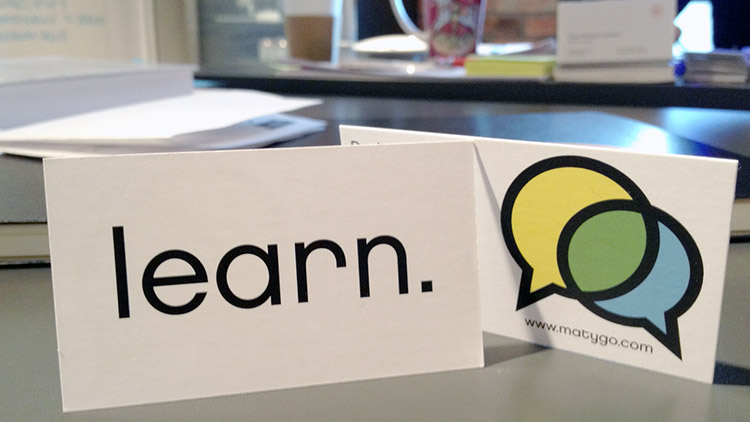

1.85.LEARNDOT (1.855.327.6368)
- Contact Us
PR
Nov 13, 2012How to name your startup: A 9 month first-hand journey through rebranding.
This is the story of how we rebranded Matygo to Learndot and the lessons learnt along the way. Much of the advice is also applicable to new companies choosing a name.
If you just want the quick and dirty, jump to the epilogue.
Introduction: From Matygo to Learndot
Today, Nov 13 2012, we are Learndot. We used to be called Matygo. Here’s the official announcement.
A year ago I thought changing my company’s name would take a few weeks, maybe a month. After all, we were a fast-moving 4 person startup:
- Call a meeting, pick a name.
- Get a logo on 99designs.
- Print some t-shirts and crank out a new website.
- Profit.
Nine months, countless hours, and many thousands of dollars later I know this: Rebranding sucks. It is expensive, time consuming, and frustrating. It distracts you from your customers and product. At times, the benefits seem theoretical at best.
Was it the right decision? As we finish the process, I can say yes, unquestionably. This is the story of the choices and the mistakes we made along the way.
Part 0, why we did it: The 3 tests of a name.
[2008 - January 2012]
“Nice to meet you, Paul. Mahtaago? Mahtehgo? is that how you pronounce it? Mahtehgo?”
“Well, we pronounce it Mahteago, but either works.”
“Ok, great. What does it mean?”
“…”
Half my meetings used to start this way – investors, customers, new hires, you name it.
When we founded Matygo 3 years ago, our goal was for a short, flexible domain that sounded webby. As I rounded out my marketing education over the years, it became increasingly clear that we had gotten it all wrong. Here’s what I learned:
- A name must be easy to pronounce. Do you want people to remember your name? [1] Have you ever noticed how difficult it is to remember a name from a foreign language? People think how they speak. If they can’t pronounce your name, they probably can’t remember it. Compounding this, when your name is difficult to pronounce it handicaps your word-of-mouth virality. If people don’t know how to pronounce your name, they are more hesitant to talk about you for fear of saying it wrong.
- A name must be easy to spell. Do you want people to be able to find you on the internet? Scenario: You meet someone on the street. You tell them about your startup, they leave excited and want to learn more. When they get back to their computer what do they type into Google? If they misspell your name they’re not going to find you (unless it’s a common word or you are already famous, in which case you don’t need this article). Here’s the test: Stop a random person. Tell them your proposed name. Ask them to spell it. At least 9 people out of 10 must spell it correctly in order to pass. Matygo failed this test horribly. We were an internet company you literally couldn’t find on the internet.
- A name must be the MVP of your entire marketing and communications strategy. Your name is the top of your messaging pyramid. If people only remember 1 thing about you, it will be your name. A great name should do half your marketing for you. It should say (or at least suggest) what you do, who you are, and what makes you different; your position in a word or two. This is incredibly difficult and just as valuable. One of the best marketing books I’ve read, Positioning, devotes an entire chapter to this point. Highly recommended.
These were the realizations that led to our rebranding decision. Matygo failed all these tests. Thankfully, timing was good for a change: we were in the early stages of a pivot from higher-education to workplace learning. A new product and market behooves a new brand and position.
Part 1: The Name Game
[Feb 2012 - June 22nd 2012]
Once the decision to rebrand was made, the next step was choosing a name.
Using the tests above as a guide, we started brainstorming. Without doubt, this was the lengthiest and most difficult part of the process. Our first meeting was an all-hands in the GrowLab boardroom on February 2nd. Nik finally suggested “Learndot” between bites of a burrito on June 22nd – 141 days later.
But back in February, we drew free-form word webs, riffed on inspirations, aspirations, and imagery. I made questionnaires. Nik made sheets with our existing logo and little blank spaces underneath so we could ‘see’ the brand with the name.
After a few weeks, we gave up on the structured exercises. Was it a good use of our time? Probably not. If we had to do it again, I’d skip this stage. Instead, put your subconscious to work on it. Think about it in the shower. Bounce names around off hand. Be patient.
In March, on the plane to SXSW I thought of the name “Inverted”. At the time, our positioning was around being “The Flipped Classroom Platform”, we were early in our pivot and had not yet settled on workplace learning. The idea was “inverted” plus “education”, “Invert – ed” which nicely backed up the flipped classroom idea and sounded a little edgy.
We were very close to choosing “Inverted”, but wisely decided to let it sit for a few weeks. As we continued our customer research and shifted into corporate learning, it became less and less relevant – in workplace learning you rarely use the word “education” (which means formal full-time schooling) and the “flipped classroom” had little recognition or relevance.
This revealed a catch-22: If your name is the MVP of your positioning strategy, it follows that you need to choose a position before a name. But you can’t choose your position until after customer discovery, when you know for certain your market and audience. Yet you need a name to use in the meantime. [2]
My advice for rebranding is to hold off choosing a name until you are confident what market you’re in. For new companies, I’d suggest “laying low” and spending little on branding until you’ve done your customer discovery – choose a name, but know you’ll probably change it.
Three months after abandoning “Inverted”, Nik and I were in New York for discovery interviews. We had made real progress: We knew our audience, we knew the problems in the space. We knew we were going to build online corporate universities and in our demos we had started using the “learn” subdomain in example deployments. On June 22nd, Nik and I left the office of Fog Creek Software and went for lunch at the Chipotle’s on Broadway near Wall St. We were chatting about “learn dot fog creek dot com.”
Nik said, “What about Learndot?”
“What about it?” I replied.
“As a name, one word, Learn-dot.”
[Paul pulls out a business card, flips it over on the table.]
“Yes. Perfect. Amazing”.

The back of our Matygo business cards had “learn.” on them the whole time…
Easy to pronounce? Check. Easy to spell? Yup. Reflect ours position and product? Absolutely.
Bonus points check: Reflects our mission, “Learning. Period.”? Definitely. Sounds fresh? I think so.
Part 2: Domain, Social Media, and IP (The Bahrainian incident)
[July 2012 - August 2012]
But there was a problem: learndot.com was registered. Much worse, it was being used as “Learndot” in the context of providing e-learning – certainly similar enough that we could be sued if we were also called “Learndot” (regardless of domain).
I did some digging and found that learndot.com was registered to a person named Lito, an IT Instructor in Bahrain. This was a positive sign: it wasn’t owned by a domain exploiter and it wasn’t an established business. Having done a Computer Science degree, I genuinely believe most people who teach IT are friendly, rational, and enjoy helping people, so I was feeling optimistic.
Domain
In early July we got back to Vancouver and I composed my outreach email to Lito. It was a very difficult email – I needed to come across as serious but not desperate, guide him down a path of options, and rouse up some empathy. All this in an email short enough that he wouldn’t gloss over it. My greatest fear was he’d see us as a gold mine for plundering and ask a price far beyond our budget.
He responded quickly, saying I was the second person in a month to inquire about the domain but he liked our story [win!]. He then asked for about triple the cash I proposed [lose!].
Throughout the negotiation, I leaned heavily on the principles of my favourite book on negotiation, Getting To Yes:
- Focus on interests not positions.
- Devise many creative options.
- Use objective criteria.
- Be hard on interests and soft on people.
My instinct was to immediately start bartering on price. But, leaning on those principles, I asked instead how he got to his number (his interests). This was the right move, his response was as surprising as it was enlightening – he had a very rational reason for all his component costs. He wasn’t plundering at all. The largest of his costs was that he needed to purchase a server to host some meeting software (plus administration cost). Servers aren’t cheap in Bahrain. I did some math; we could host it for for less than 1/10th his cost. Lito also liked my suggestion of a video with us thanking him in front of a scenic Vancouver background, which we could film on our office balcony.
By hosting his server (which cost us very little) and making a 30-second video, we were able to drop his price several thousand dollars. In the end, we did these two things and paid only slightly more cash than I offered in my first email.
I’m really pleased with how the entire negotiation went, but I have to credit Lito because my inclinations were right: he was friendly, rational, and genuinely wanted to help.
After agreeing to terms, the rest was just process. A trademark agent at our lawyers drafted the agreements and guided us through using escrow.com. The entire domain step took about a month from first email to transfer.
Social Media
Social media was easier. Facebook handle was available. Twitter handle was registered, but had never tweeted and looked abandoned. I contacted a friend who works at Twitter and after a bit of investigation was able to get @learndot as well (which you should follow).
IP Rights
For the time being, we’ve decided to not change the name of the company legally. Our contracts are all with “Matygo Educational Incorporated” – there’s no obvious benefit to changing everything given the substantial cost. However, since we won’t have “Learndot” as an incorporated entity we won’t have the name protection that usually comes with an LLC. For this reason, we’ve filed for a registered trademark on “Learndot”.
Name & Legal Protections? Check. Domain? Check. Social Media Handles? Check. Learndot was ours.
Part 3: Identity, marketing, and launch
[September 2012 - Today]
Learndot had a name, but no face, body, or spirit.
We needed an identity. We considered 99designs, but Nik felt strongly that we wanted to work with a professional who we could have a relationship with, would get to know us and our business, and could provide a full identity package beyond a logo. Design is something everyone on our teams values deeply, so it wasn’t a hard sell.
We asked our network for recommendations, and Adam Saint (Creative Director at 10sheet) recommended his old classmate, Roger Dario. I visited his portfolio and was floored: He’s designed some of Vancouver’s best young brands [3] and has a fresh yet professional style.
Roger’s process was roughly this: he gave us 3 initial directions and we were to choose one and iterate from there. In the end, we used one of his first directions, nearly exactly as originally presented – though we explored countless iterations on the theme. Logo design is notoriously hard to find consensus on, ask five people and somehow you’ll end up with ten opinions. It’s a delicate balance of incorporating the opinions you trust and politely ignoring the ones you don’t. [4]
To be honest, I didn’t love the logo at first sight. So I sat on the decision for a week, drew it on our whiteboard, printed it out, taped it to my monitor. At one point, I took the paper down to the street in front of our office and stopped pedestrians asking them to read it aloud, so I could gauge their reactions and ask what they thought we did. Over the week I became a believer. I grew to love it thoroughly. Without doubt, going with Roger was the right choice for us. Here are the Brand Guidelines he delivered, see if you don’t agree.
With our identity in hand, it was time to start the marketing machine: A new website and swag. Swag was easy: cards and notebooks. Why notebooks? Because you put your learning in them, of course. No t-shirts or apparel, yet.
For the website we worked with local designer Ryan McMaster of Theory Design. Ryan has been great, impressively patient in extracting our vision. It took three full revisions and countless edits of the homepage before everyone was willing to move forward, but once we nailed the homepage everything else fell into place pretty quickly.
Nine months and many thousands of dollars later I am extremely proud to say that we are Learndot. We are building the world’s best learning tools for business, and we want to help you make learning a competitive advantage.
Epilogue: 11 Lessons Learned
- The three most important attributes of a name are the three “P”s: it must be (1) pronounceable (2) spellable (printable) and (3) positionable.
- Rebranding is a long, expensive process.
- Your company’s name delivers compounding returns if you get it right – and only gets more expensive to fix as you grow. So get it right.
- It’s near impossible to get it right until you know what market you’re in and what you’re building.
- Name brainstorming sessions are not a smart investment.
- Let the collective subconscious of your team stew on the naming problem – use the hive mind, it’s much smarter than your mind. Also, the hive mind can’t be rushed. Be patient.
- If you love your name, fight for it. Don’t give up, even if it looks extremely unlikely (for example: it’s already being used in your market space, owned by someone in the middle east, and you have very little money).
- Learn how to negotiate effectively. Much of it is counter-intuitive and requires practice.
- You can get a Twitter handle even if it’s already taken, provided it’s abandoned.
- Don’t compromise on identity design, it’s a subjective process and you have to have a well-tuned compass. Don’t succumb to seeking widespread agreement, design by consensus has never made something beautiful. Have a small group of trusted advisors.
- Be patient. Work with great people and be patient.
Footnotes
[1] See GigaOm’s post on naming your startup that concludes “memorability is the most important thing”.
[2] For more thinking on this, Nik wrote a blog post about this problem while we were dealing with it, on branding and customer development.
[3] For example, 49th Parallel Coffee, Six Acres in Gastown, and A-list design firm, MetaLab.
[4] This is a skill I need to exercise constantly as a founder. There’s no end of people giving you advice, the hard part is knowing what to follow and what to ignore. Trust your vision. But don’t be a pig head. Surround yourself with good people, that’s the only reliable method I’ve found to navigate this challenge successfully.